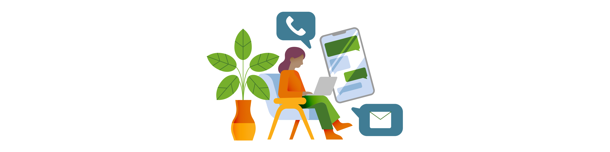

Samen werken aan visueel aantrekkelijke en toegankelijke overheidscommunicatie!

Laat ons jouw illustraties maken
Wanneer u illustraties bij ons bestelt, worden deze toegevoegd aan de illustratieset. U ontvangt niet alleen uw eigen illustraties, maar ook de volledige bestaande collectie in uw organisatie’s huisstijlkleuren. Op deze manier bouwen we gezamenlijk aan een uitgebreide, uniforme set voor toegankelijke overheidscommunicatie.
We zoeken financiering voor het verbeteren en uitbreiden van illustraties voor diverse thema’s
Dienstverlening
- 404 pagina
- Huisregels van geementen
- Meld je aan voor de niewusbrief
- Inloggen met rijbewijs of identiteitskaart via DigiD
- De Woo
Campagnes
- Stoken en koken zonder aardgas
- Op vakantie? Tips tegen inbraak
- Vuurwerk campagne
- Luchten van je huis
- Duurzaamheid (huis, tuin, spullen, vervoer, subsidies)
- Energiebesparen
- Slim met afval
- Zwerfafval rapen
Infographics of animaties
- Hoe werkt de omgevingswet
- Verkiezingen
- Wat is de Woo?
Mis je een icoon?
Zijn gemeenten of overheidsinstellingen geïnteresseerd in deze iconen en willen zij bijdragen, neem dan contact op.
We zoeken budget voor het verbeteren en ontwikkelen van nieuwe iconen voor onderwerpen zoals:
- Toeristenbelasting
- Cultuursubsidie
- Immigratie en naturalisatie
- Plannen en projecten
- Project in uitvoering
- Gemeentehuis
- Taal
- Bekendmakingen
- Bromfietsrijbewijs
- Verloren of gevonden
- Bestemmingsplannen
- Kinderburgermeester
- Attentie buurtpreventie
- Opkoopbescherming
Meer informatie
Wilt u bijdragen of meer informatie? Stuur een e-mail naar hallo@opengemeenten.nl
Blijf op de hoogte van updates: Volg ons op LinkedIn